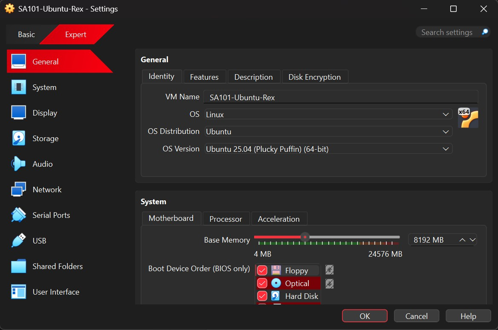
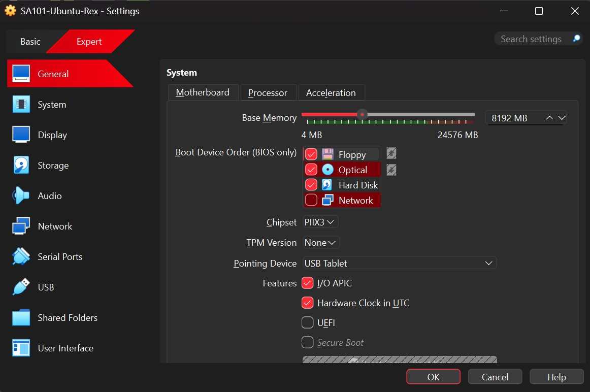
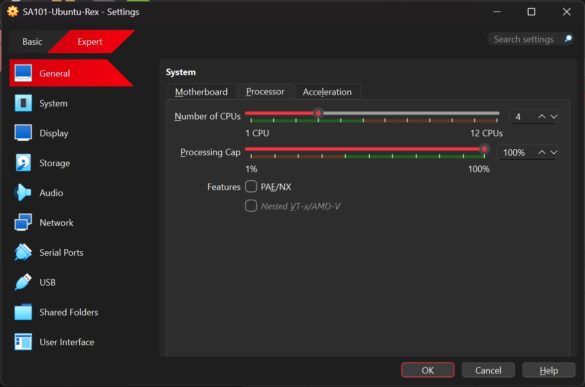
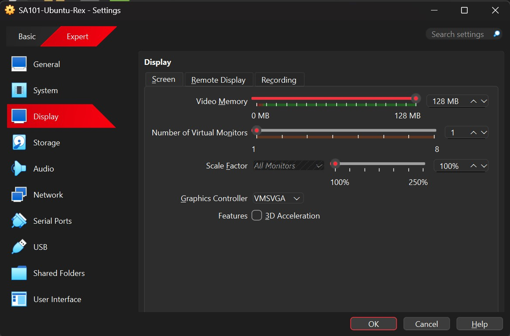
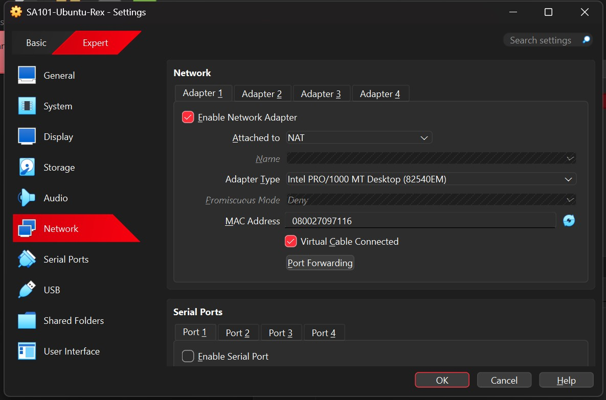
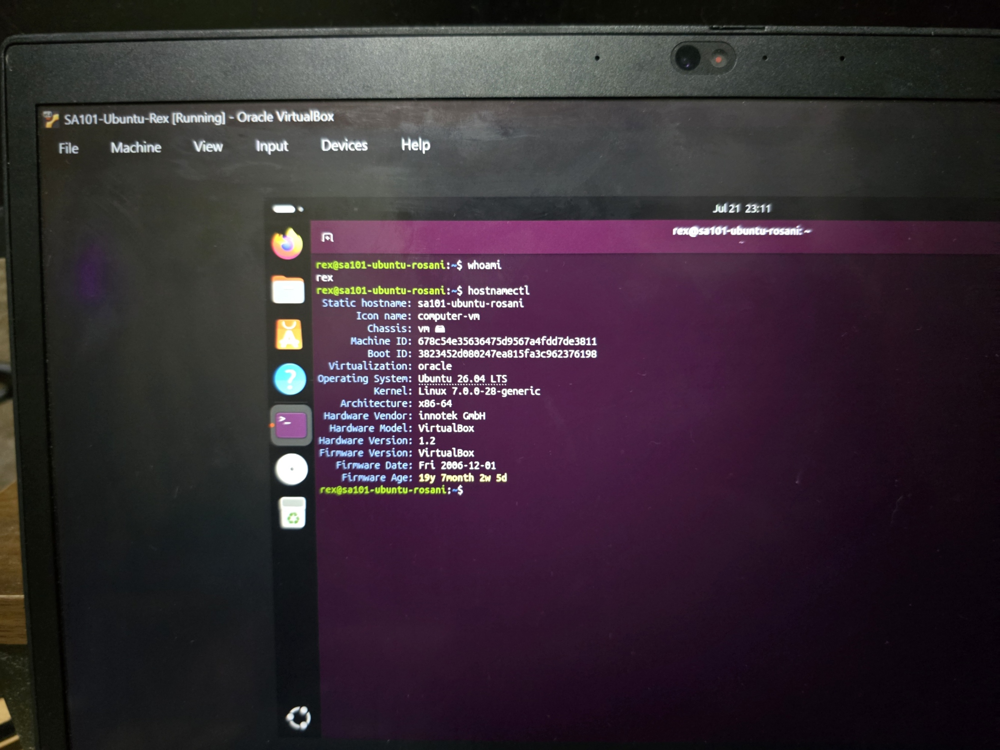
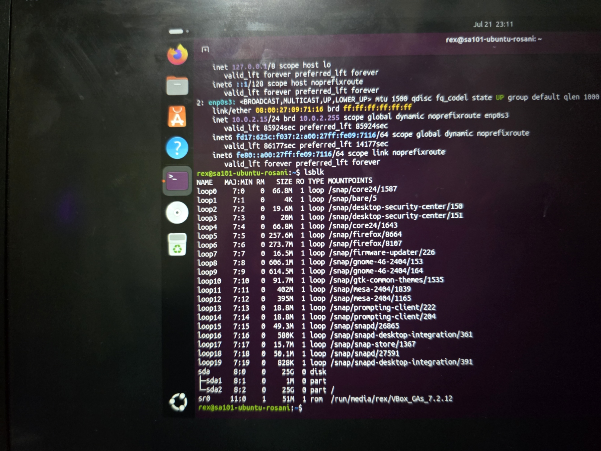
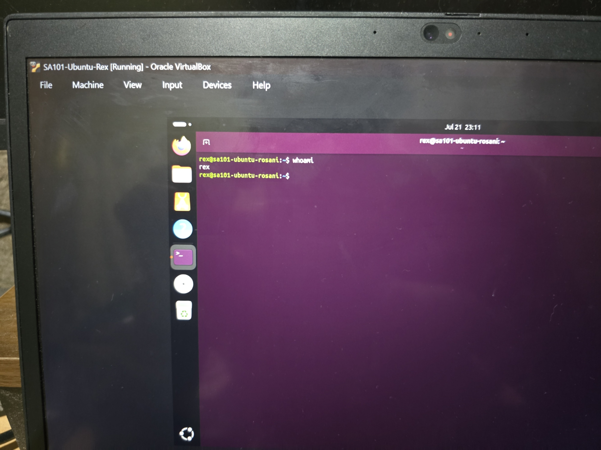

hostnamectl
ip a
lsblk
whoami
ping -c 4 8.8.8.8
ping -c 4 ubuntu.com
df -h
free -hDuring the Guest Additions installation (Part 14), the graphical installer failed with the error: "bzip2 not found. Please install: bzip2 tar; and try again."


Installed the missing packages via terminal, then used the terminal method to install Guest Additions:
sudo apt install bzip2 tar -y sudo apt install build-essential dkms linux-headers-$(uname -r) -y sudo sh ./VBoxLinuxAdditions.run
After restarting Ubuntu, Guest Additions worked correctly. Shared clipboard and drag-and-drop were then enabled via Devices → Shared Clipboard → Bidirectional.
"What did I learn from installing an operating system in a virtual machine?"
I learned that installing an OS is not just clicking next over and over. There is a lot going on behind each step. You have to pick how much RAM and CPU to give the VM, make sure the virtual disk is big enough, and configure the network so it can reach the internet. If you rush through these parts, the install can freeze or fail.
When my installer froze, I had to figure out that it was because I only gave it 2GB of RAM. I bumped it to 8GB and it worked fine. When Guest Additions failed with the bzip2 error, I had to use the terminal to install the missing packages. These were small problems but they taught me to stay calm and actually read the error messages instead of panicking.
The biggest thing I took away is that virtualization is a safe way to practice. I can mess up the VM, delete it, and start over without hurting my actual computer. That makes it a great tool for learning system administration.